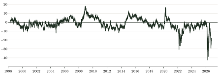
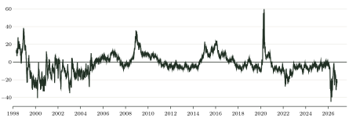
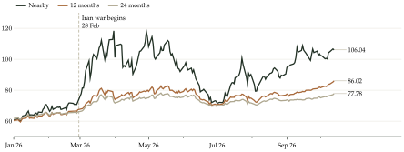

The Iran war renewed the debate about how high oil prices could rise. My interest here is less in forecasting a particular price and more in building a simple way to compare episodes. The question is how expensive nearby Brent futures are relative to contracts for later delivery, and how that relative price changes over time.
The nearby price alone gives limited information about this distinction. Brent can trade at $100 with an almost flat curve or with a large premium over deferred contracts. If the whole curve rises together, the higher nearby price says little about a greater urgency for earlier delivery. A rise concentrated in nearby futures produces a different pattern. Comparing the nearby price only with its own past can miss that difference.
A calendar spread adds this missing comparison, but its size still depends on the price level. If nearby futures are $50 and deferred futures are $40, the spread is . At $100 and $80, it is . The absolute gap doubles, yet the deferred discount is 20% in both cases. A larger absolute gap therefore need not mean a larger relative premium.
Spread and slope
Let denote nearby Brent futures and the contract 12 delivery months beyond it. Define (1) (2) The spread is in USD per barrel; the slope is in log points. Both are negative in backwardation, when nearby futures are more expensive, and positive in contango. A slope of log points corresponds to a deferred price 18.88% below nearby.
The logarithmic slope uses the ratio of the two futures prices. In the example above, both curves have the same ratio of 0.8 and the same slope of log points. Multiplying both prices by the same factor leaves the measure unchanged. With the delivery spacing held at 12 months, this makes the slope comparable across periods with very different Brent price levels.
Figure 1: Spread between Brent futures contracts
12 months beyond nearby minus nearby, USD per barrel.

Source: Bloomberg; author's calculations.
Figure 2: Logarithmic slope of the Brent futures curve
, log points.

Source: Bloomberg; author's calculations.
On 3 July 2008, nearby Brent futures reached $146.08 with a slope of 1.24 log points. On 31 March 2026, they were lower at $118.35, but the slope was , the most negative reading since April 1998. The latter episode had a much larger relative premium for nearby delivery.
Figure 3: Brent futures prices in 2026
USD per barrel. Labels show prices on 13 October.

Source: Bloomberg. The vertical line marks 28 February 2026.
Between 27 February and 31 March, nearby Brent futures rose from $72.48 to $118.35, while the contract 12 months beyond nearby increased from $67.35 to $75.53. The repricing was concentrated in nearby delivery. By 13 October, the spread had narrowed to and the slope to log points.
A more negative slope is consistent with tighter nearby conditions, but demand, inventories and risk premia also affect the curve. It provides a comparison across delivery dates, rather than an isolated measure of supply restrictions.
Data: Bloomberg CO1, CO13 and CO25, daily observations from 16 April 1998 to 13 October 2026. Month labels refer to delivery spacing relative to nearby futures.